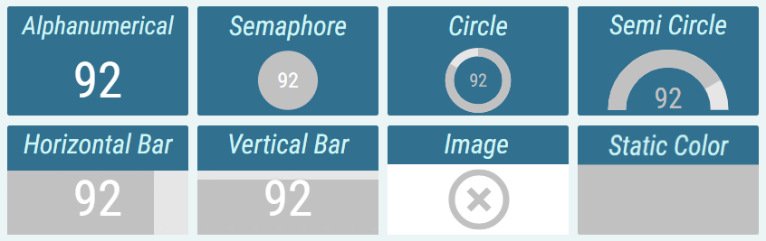
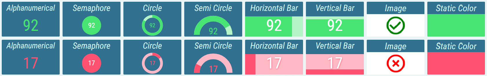
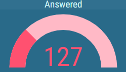

KPI¶
A KPI is a segment, which displays a single result of a specific connector calculation.
Usually, a KPI is used to display the current result of its calculation. However historical results can be displayed too. A year, month, week, day, hour, 30 minutes or 15 minutes historical interval can be chosen. When displaying a historical result, how much the interval should go back in time, can be configured. This way KPI can display value from any number of days ago. For more information about historical intervals see Historical Intervals chapter.
Usually, KPI is used to display its value in the form of a simple text. Additionally multiple other, more graphical presentation types can be chosen.
Figure 1: KPI presentation types.
- Alphanumeric
The value is presented as a pure text, without any additional graphical elements.
- Semaphore
The value is enveloped in a colored circle. The circle can change its color, depending on the value. For example by turning red, when the value is considered bad. The semaphore is used, when the state is more important than the value itself
- Circle
The value is accompanied by a circle indicator. The indicator represents the level of fulfillment of a configured goal.
- Semi Circle
The value is accompanied by a semi-circle indicator. The indicator represents the level of fulfillment of a configured goal.
- Horizontal/Vertical Bar
The value is accompanied by a rectangular indicator. The indicator represents the level of fulfillment of a configured goal.
- Image
Image is applied.
- Static Color
A static color is applied.
Kpi can be conditionally styled based on its value. Kpi can have multiple conditional styles and the first one that meets its condition is applied. Each conditional style can be represented by different presentation type, colors, font, etc.
For more information about KPI’s conditional styles, see Conditional Styles chapter.
Figure 2: The effect of changing text color with conditional styles on different presentation types.
Also, alerts can be configured, to notify the user, when the value reaches the configured range for a conditional style. These alerts can be:
Blink Background – the value’s background blinks with configured color.
Audible Alert – an audio alert is played.
Audible alerts are always automatically played. In case the autoplay function does not work properly, see the Media autoplay not working chapter.
Notification - message is sent to configured e-mails or 3rd party applications
For more information about alerts see KPI chapter.
Figure 3: Visual alert - KPI in the process of blinking
For more information about editing this segment, see KPI chapter.